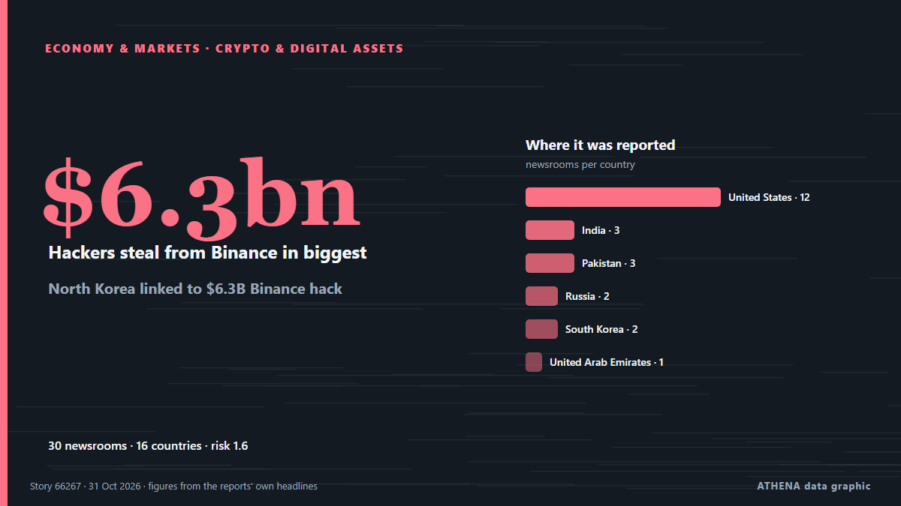

North Korea linked to $6.3B Binance hack

A North Korea-based cybercrime group appears to be behind a $6.3 billion hack of the cryptocurrency exchange Binance, according to two blockchain intelligence firms. de The Hill
Relayé de façon indépendante par 30 médias dans 16 pays depuis le 30 oct. ; premier à l'annoncer : Cointelegraph ; la couverture faiblit. ATHENA juge le risque faible (1.6/10), surtout en raison de la gravité des dommages décrits et de sa portée géographique et sectorielle. La confiance est de 89 % (élevée) : 30 médias indépendants le confirment, avec une fiabilité moyenne des sources de 76 %. Médias par pays : États-Unis (12), Inde (3), Pakistan (3). Couverture : du 30 oct. au 31 oct., 35 heures.
Pourquoi c'est important: Les évolutions économiques et de marché se répercutent sur les prix, l'emploi, le coût du crédit et l'investissement.
Ce qui a changé : 16 nouveaux articles de 14 rédactions dans les 24 heures jusqu'au 31 oct..
Premier titre : Binance says $6.3B US hacked in what could be largest cryptocurrency theft ever
Les titres sont affichés en anglais, tels que publiés.
En un coup d'œil
Sélectionné, noté et rédigé par la méthodologie publiée d'ATHENA. Aucun rédacteur n'intervient sur un événement en particulier. Comment il est produit ›
| 30 Oct 03:47 UTC | 1 |
|---|---|
| 30 Oct 05:47 UTC | 0 |
| 30 Oct 07:47 UTC | 1 |
| 30 Oct 09:47 UTC | 8 |
| 30 Oct 11:47 UTC | 4 |
| 30 Oct 13:47 UTC | 5 |
| 30 Oct 15:47 UTC | 2 |
| 30 Oct 17:47 UTC | 1 |
| 30 Oct 19:47 UTC | 5 |
| 30 Oct 21:47 UTC | 1 |
| 30 Oct 23:47 UTC | 0 |
| 31 Oct 01:47 UTC | 3 |
| 31 Oct 03:47 UTC | 0 |
| 31 Oct 05:47 UTC | 0 |
| 31 Oct 07:47 UTC | 1 |
| 31 Oct 09:47 UTC | 1 |
| 31 Oct 11:47 UTC | 0 |
| 31 Oct 13:47 UTC | 1 |
| 30 Oct 11:13 UTC | 1.6 |
|---|---|
| 30 Oct 11:25 UTC | 0.9 |
| 30 Oct 11:51 UTC | 1.7 |
| 31 Oct 15:14 UTC | 1.6 |
Pourquoi ces chiffres
Importance
Risque
Confiance
La couverture : qui l'a annoncé, et quand
titre tel que publié · ouvre l'original- Cointelegraph · États-UnisBinance hack could accelerate shift to DEXs: Standard Chartered
- Times of India · IndeHackers steal $6.3 billion from Binance in biggest crypto heist ever co-CEO responds
- Gulf News · Émirats arabes unisBinance hack: Lazarus group suspected as $6.3b theft rattles traders
- Stuff · Nouvelle-ZélandeReported largest ever hack worth US$6.3B on cryptocurrency exchange linked to North Korea
- Express Tribune · PakistanFBI and US Secret Service working with Binance after $6.3 billion hack, source says
- Fortune · États-UnisSecurity experts are already wondering if North Korea is behind the $6.3 billion Binance heist
- CBS News (World) · États-Unis$6.3 billion Binance hack likely work of North Korea, experts say
- CBC News · CanadaBinance says $6.3B US hacked in what could be largest cryptocurrency theft ever
- Business Recorder · PakistanHackers steal $6.3 billion from Binance in record heist blamed on North Korea
- DW English · AllemagneBinance crypto exchange suspends trades over North Korea-linked hack
- Anadolu Agency (English) · TurquieFACTBOX - From Binance to Bybit: The biggest cryptocurrency heists
- The Times of Central Asia · CAS$6.3 Billion Binance Cyberattack Comes as Exchange Expands in Central Asia
- Fast Company · États-UnisBinance hack: Bitcoin and other tokens fall as the crypto world is rocked by a historic attack
- NPR World · États-UnisBlockchain intelligence firms link North Korea to $6.3B hack on Binance
- PBS NewsHour · États-UnisBinance flags 'potential security issue,' says approximately $6.3 billion impacted
- Jamaica Observer · JamaïqueCrypto platform Binance confirms ‘complex’ US$6.3 billion hack
- Meduza (English) · RussieNorth Korean hackers linked to Russia suspected in Binance crypto exchange hack
- TASS (English) · RussieBinance cryptocurrency exchange starts returning assets to affected users
- The Hill · États-UnisNorth Korea linked to $6.3B Binance hack
- Express Tribune · PakistanHackers steal $6.3b from Binance
- Courthouse News · États-UnisBlockchain intelligence firms link North Korea to $6.3B hack on Binance
- NDTV · IndeWhat Is TraderTraitor? North Korea Group Accused Of $6 Billion Binance Heist
- TheJournal.ie · IrlandeHave you ever invested in cryptocurrency?
- Foreign Policy · États-UnisThe World’s Biggest Crypto Heist
- The Block · États-UnisInside the largest crypto hack on record: How attackers breached Binance for $6.3 billion
- The Hill · États-UnisTrump says US looking into Binance hack: 'We don't know' if North Korea responsible
- MyJoyOnline · GhanaCrypto giant Binance attempting to recover $6.3bn stolen in hack linked to North Korea
- Novinite · BulgarieNorth Korea-Linked Hackers Suspected in $6.3 Billion Binance Breach
- BBC News · Royaume-UniWhy North Korea's 'elite' hackers are the prime suspect in major Binance hack
- Korea Herald · Corée du SudN. Korean hackers blamed for record $6.3b Binance cryptocurrency theft: US firm
- The Korea Times · Corée du SudWhat to know about the $6.3 bil. hack on Binance, likely the biggest-ever crypto theft
- NDTV · IndeInside World's Largest Crypto Heist: How Binance's $6.3 Billion Was Stolen
- France 24 English · FranceBinance hit by 6.3 billion dollar crypto theft
- PBS NewsHour · États-UnisWhat to know about the $6.3B hack on Binance, likely the biggest-ever crypto theft